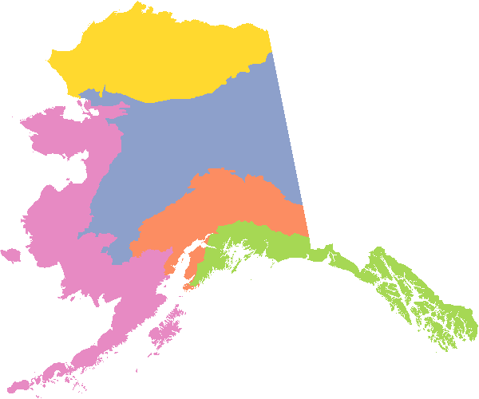

SNAPverse R package ecosystem development frozen.
Development of the SNAPverse R package ecosystem has been frozen indefinitely. This project was never directly funded. I began it out of personal interest, but no longer work for SNAP. It will remain archived here for historical reference.
The snappoly package is a data package in the SNAPverse collection of R packages. It contains a number of convenient SpatialPolygonsDataFrame objects sourced from shapefiles commonly used at SNAP.
Available maps
There are eight available maps in the package:
-
alaska: State of Alaska. -
canada: Canadian provinces. -
ecoreg: Alaska ecological regions (ecoregions). -
aklcc: Alaska Landscape Conservation Cooperative. -
lcc: Alaska and Canada Landscape Conservation Cooperative. -
cavm: Circumpolar Arctic Vegetation (Alaska). -
fmz: Alaska Fire Service fire management zones. -
tpa: Terrestrial protected areas.
Installation
You can install snappoly from github with:
# install.packages('devtools')
devtools::install_github("leonawicz/snappoly")Usage
Data packages in the SNAPverse can be loaded on their own, though it is more typical to load data from a data package in the context of using the snapstat package, which provides a collection of functions that cater specifically to manipulating, analyzing and plotting SNAP data sets. This is relatively boilerplate and is mentioned for context, but for this package it is not that necessary.
In the example below, the raster package is unnecessary, but it is loaded because it offers a compact print method. Data sets from the above list can immediately be referred to directly once snappoly is loaded. To access documentation on the package from R, use ?snappoly, or for a data set for example, ?fmz.
library(raster) # compact print method
library(snappoly)
aklcc
#> class : SpatialPolygonsDataFrame
#> features : 5
#> extent : -738286.4, 1491802, 517942.6, 2378458 (xmin, xmax, ymin, ymax)
#> coord. ref. : +proj=aea +lat_1=55 +lat_2=65 +lat_0=50 +lon_0=-154 +x_0=0 +y_0=0 +datum=NAD83 +units=m +no_defs +ellps=GRS80 +towgs84=0,0,0
#> variables : 6
#> names : LCC_Name, Acres_, Shape_Leng, Shape_Le_1, Shape_Area, Unit.ID
#> min values : Arctic LCC, 93457602, 11965337, 11941320, 1.353159e+12, 1
#> max values : Western Alaska LCC, 728185322, 133482546, 133482546, 3.782110e+11, 5clrs <- c("#FC8D62", "#8DA0CB", "#E78AC3", "#A6D854", "#FFD92F")
plot(aklcc, col = clrs, border = NA)
Notes
Cleaning and curating is kept to a minimum for this package. The data sets come from various sources so they are not intended to share conventions regarding attribute names or other properties. However, shapefiles were reprojected as needed in order for the collection to share the NAD83 Alaska Albers Equal Area Conic projection in common:
+proj=aea +lat_1=55 +lat_2=65 +lat_0=50 +lon_0=-154 +x_0=0 +y_0=0 +ellps=GRS80 +datum=NAD83 +units=m +no_defs
The maputils package contains more highly processed and simplified versions of these spatial polygons data frames that are more suitable to display than analysis, e.g., for efficient use in Shiny apps.